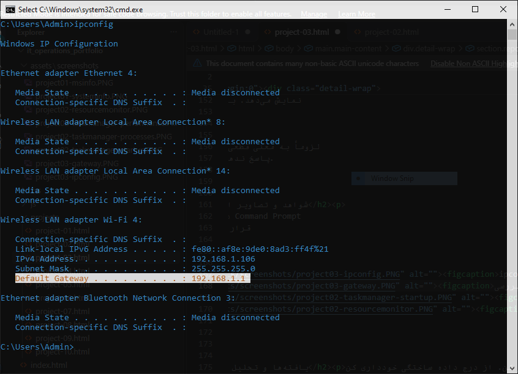
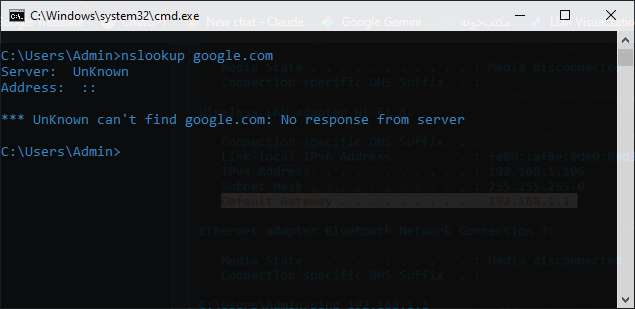
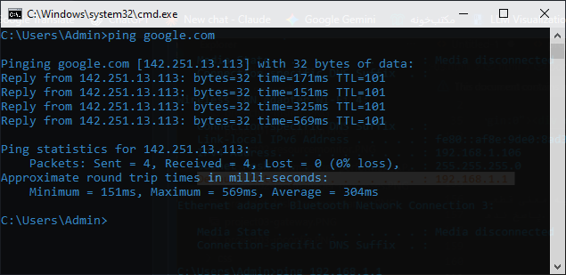
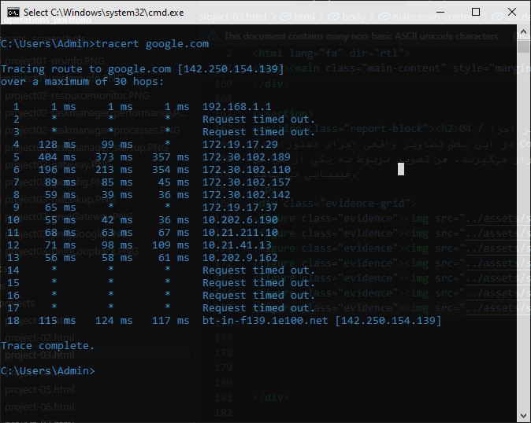

عیبیابی اتصال اینترنت
Network Troubleshooting — اجرای مراحل عیبیابی شبکه در ویندوز و ثبت نتیجه هر مرحله.
01 / هدف مأموریت
در این پروژه، شناسایی علت قطع شدن اتصال اینترنت یک کامپیوتر با استفاده از روش عیبیابی مرحلهبهمرحله است. در این سناریو، کاربری تماس گرفته و اعلام میکند که هیچکدام از وبسایتها برای او باز نمیشوند. وظیفه تکنسین IT این است که بدون حدس زدن و با اجرای دستورهای مشخص، محل احتمالی مشکل را شناسایی کند.
02 / ابزارها و محیط اجرا
cmd)
ipconfig
ping
nslookup
tracert
ipconfig /flushdns
03 / مراحل انجام کار
در این سناریو، عیبیابی از بررسی وضعیت شبکه خود کامپیوتر شروع شده و بهتدریج تا بررسی ارتباط با اینترنت ادامه پیدا میکند.
ابتدا دستور ipconfig را در Command Prompt اجرا میکنیم تا اطلاعات مربوط به آداپتور شبکه نمایش داده شود.
اگر آدرس IPv4 با عدد 169.254 شروع شود، سیستم احتمالاً نتوانسته از DHCP آدرس IP دریافت کند. در این حالت باید کابل شبکه، اتصال Wi-Fi و روتر بررسی شوند.
در خروجی دستور قبلی، مقدار Default Gateway را پیدا میکنیم. این آدرس معمولاً مربوط به روتر یا دروازه پیشفرض شبکه است و برای بررسی ارتباط کامپیوتر با روتر به آن نیاز داریم.
با اجرای دستور زیر، عملکرد ارتباط داخلی TCP/IP سیستم را بررسی میکنیم. این تست نشان میدهد که سیستم میتواند با آدرس Loopback خودش ارتباط برقرار کند.
دریافت پاسخ موفق نشاندهنده عملکرد صحیح ارتباط Loopback است؛ اما بهتنهایی سلامت کامل کارت شبکه فیزیکی یا اتصال اینترنت را ثابت نمیکند.
در این مرحله آدرس Gateway بهدستآمده از مرحله دوم را جایگزین عبارت Gateway میکنیم.
اگر پاسخی دریافت نشود، باید ارتباط بین سیستم و روتر از نظر کابل شبکه، Wi-Fi یا وضعیت خود روتر بررسی شود.
برای بررسی اینکه آیا سیستم میتواند نام دامنه را به آدرس IP تبدیل کند یا خیر، دستور زیر را اجرا میکنیم.
اگر آدرس IP مربوط به دامنه برگردانده شود، فرایند تبدیل نام دامنه به IP انجام شده است. در صورت بروز خطا، سرویس یا تنظیمات DNS نیاز به بررسی دارند.
در این مرحله یک دامنه اینترنتی را Ping میکنیم تا امکان برقراری ارتباط با مقصد بررسی شود.
اگر دستور موفق باشد اما وبسایت در مرورگر باز نشود، احتمال دارد مشکل از مرورگر، تنظیمات فایروال یا نحوه دسترسی مرورگر به اینترنت باشد.
در آخر، برای مشاهده مسیر ارتباطی بستهها تا مقصد از دستور tracert استفاده میکنیم.
این دستور مسیر عبور بستهها از روترهای مختلف تا مقصد را نمایش میدهد. با بررسی خروجی میتوان مشخص کرد که در کدام بخش از مسیر پاسخ دریافت نمیشود.
04 / تصاویر اجرا
در این بخش تصاویر واقعی اجرای دستورات در Command Prompt قرار میگیرند. هر تصویر مربوط به یکی از مراحل عیبیابی می باشد.







05 / یافتهها و تحلیل فنی
| مرحله | نتیجه نمونه | تحلیل فنی |
|---|---|---|
| ipconfig | 192.168.1.106 | آدرس IP معتبر دریافت شده و آدرس از نوع APIPA نیست. |
| Default Gateway | 192.168.1.1 | آدرس روتر یا دروازه پیشفرض شبکه مشخص شد. |
| ping 127.0.0.1 | موفق | ارتباط داخلی Loopback سیستم برقرار است. |
| ping Gateway | موفق | ارتباط سیستم با روتر برقرار است. |
| nslookup google.com | IP برگشت داده نشد | مشکل از DNS است نه خود اینترنت |
| ping google.com | موفق | ارتباط با مقصد از طریق Ping برقرار شده است. |
| tracert google.com | 18 Hop تا مقصد | مسیر نمونه تا مقصد نمایش داده شده است. |
با توجه به نتایج نمونه، تمام تستها موفق بودهاند و نشانهای از قطعی ارتباط در مراحل بررسیشده مشاهده نمیشود. بنابراین در این سناریو اتصال اینترنت برقرار است.
اگر در یکی از مراحل پاسخ مورد انتظار دریافت نشود، باید همان بخش بهعنوان محدوده احتمالی مشکل بررسی شود. البته برخی خطاها، مانند عدم پاسخ به Ping، ممکن است ناشی از محدودیتهای فایروال یا مسدود بودن ICMP باشند.
06 / مشکلات و راهحلها
| مشکل مشاهدهشده | علت احتمالی | راهحل پیشنهادی |
|---|---|---|
| IP شروعشده با 169.254 | عدم دریافت آدرس از DHCP | بررسی کابل، Wi-Fi و روتر |
| Ping به Gateway بیپاسخ | مشکل ارتباط بین سیستم و روتر | بررسی کابل شبکه، Wi-Fi و وضعیت روتر |
| nslookup بدون پاسخ | مشکل سرویس یا تنظیمات DNS | اجرای ipconfig /flushdns برای پاک کردن کش DNS |
| Ping موفق ولی سایت باز نمیشود | احتمال مشکل مرورگر یا فایروال | بررسی مرورگر و تنظیمات فایروال |
| عدم دریافت پاسخ در tracert | احتمال محدودیت پاسخدهی یکی از روترها یا مشکل مسیر | بررسی Hopهای بعدی و در صورت تأیید مشکل مسیر، گزارش به ISP |
۱. تغییر DNS به آدرسی مانند 8.8.8.8 در صورت نیاز.
۲. گزارش مشکل مسیر ارتباطی به شرکت ارائهدهنده اینترنت (ISP).
دستور ipconfig /flushdns با پاک کردن کش DNS سیستم، امکان حذف اطلاعات قدیمی یا نامعتبر ذخیرهشده در این کش را فراهم میکند. البته این دستور بهتنهایی تمام مشکلات DNS را برطرف نمیکند.
07 / جمعبندی و آموختهها
در این پروژه با روش مرحلهبهمرحله عیبیابی اتصال اینترنت آشنا شدم و یاد گرفتم چگونه با استفاده از ابزارهای داخلی ویندوز، محدوده احتمالی مشکل را شناسایی کنم.
مهمترین آموختههای این پروژه:
- عیبیابی شبکه باید از نزدیکترین بخش، یعنی سیستم خود کاربر، شروع شده و بهتدریج به سمت روتر و اینترنت ادامه پیدا کند.
- دستور ipconfig اطلاعات مربوط به آدرس IP و Gateway را نمایش میدهد.
- دستور ping برای بررسی برقراری ارتباط با یک مقصد مشخص استفاده میشود.
- دستور nslookup عملکرد تبدیل نام دامنه به IP را بررسی میکند.
- دستور tracert مسیر عبور بستهها تا مقصد را نمایش میدهد.
- دستور ipconfig /flushdns کش DNS سیستم را پاک میکند.
در نهایت متوجه شدم که برای عیبیابی شبکه نباید صرفاً به حدس و آزمایش تصادفی متکی بود؛ بلکه هر دستور اطلاعات مشخصی در اختیار تکنسین قرار میدهد و به محدود کردن محدوده مشکل کمک میکند.